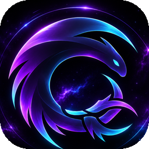

Cosmic Night PARA WINDOWS VERSÃO DE TESTE
Seu próximo espaço
para compartilhar.
O Cosmic Night no seu computador.
Baixe a versão de teste pelo GitHub Releases.
Arquivo hospedado no GitHub. O download funciona com o computador do desenvolvedor desligado.